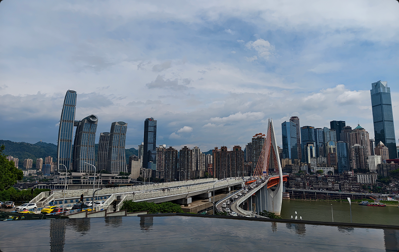
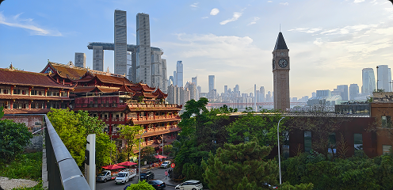
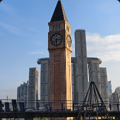
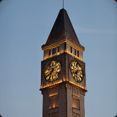

I’m someone who loves sport, games, and exploring new places. Football has taught me to trust a team and keep going under pressure. Mountain biking pushes me to read the terrain, make decisions, and learn from every ride. When I travel, photography helps me slow down and notice light, colour, and small details.
I want this portfolio to show more than results. It’s about how I meet challenges, reflect on mistakes, and keep doing the things I care about.
A PERSONAL PRACTICE IN LIGHT, COLOUR, AND COMPOSITION.




Photography gives me a different way to explore. While travelling or taking a break from sport, I stop to notice the way light changes a place, how colours work together, and which moments feel worth remembering.